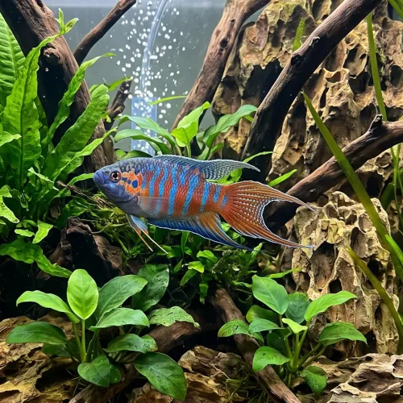

Nome popular principal
Peixe-Paraíso
Peixe-Paraíso, Paraíso, Gourami-Paraíso
Ficha de peixe
Anabantídeos e Labirintídeos
Um anabantídeo clássico e vibrante, famoso por sua extrema resistência a variações de temperatura e beleza marcante.

Nome popular principal
Peixe-Paraíso, Paraíso, Gourami-Paraíso
Nome científico
Nome técnico essencial para taxonomia, cruzamento de manejo e referência editorial consistente.
Dificuldade de manejo
Use este nível como referência inicial, sempre considerando volume, estabilidade e compatibilidade do aquário.
Seção 1
Seção 2
Seções 4 a 6
Peixe-Paraíso tem hábito alimentar onívoro. Excelente. 1 a 2 vezes ao dia. Aceita prontamente rações em flocos e grânulos, beneficiando-se da oferta regular de alimentos vivos como larvas de mosquito e artêmias.
Machos são mais coloridos, com nadadeiras dorsal e anal mais longas e pontiagudas; fêmeas são menores e de cores mais opacas. Tipo de reprodução: Ovíparo. Dificuldade de reprodução: Fácil. O macho constrói um ninho de bolhas na superfície da água e cuida dos ovos e alevinos com extrema dedicação até que consigam nadar sozinhos.
Alta. Substrato recomendado: Areia fina ou cascalho escuro de granulometria fina. Necessidade de esconderijos: Média. Aprecia aquários bem plantados com vegetação flutuante, que serve para ancorar seu ninho e oferecer refúgio às fêmeas.
Seção 7
Muito tolerante a variações térmicas, suporta temperaturas mais baixas que a maioria dos peixes tropicais e vive até 8 anos.
Seção 8
Não necessariamente em regiões de clima ameno, pois tolera temperaturas baixas entre 16°C e 26°C melhor do que peixes tropicais tradicionais.
Não é recomendado, pois machos travam lutas territoriais intensas até a morte ou ferimentos graves do rival.
Não, ambos são anabantídeos territoriais de superfície e brigarão constantemente se mantidos no mesmo espaço.